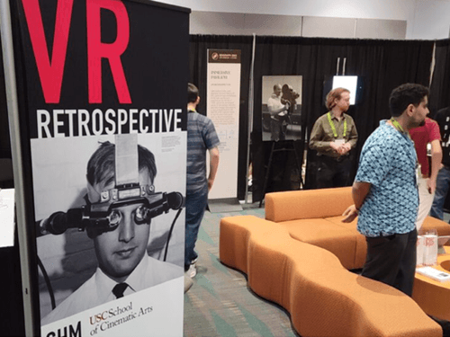
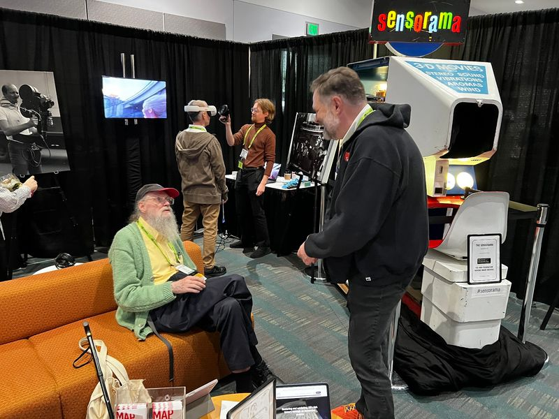

Technical Lead · 2023–2024
Recreating seminal XR experiences so they outlive the hardware they were born on. AWE (Augmented World Expo) 2024 Best in Show.


Landmark XR works from the medium's first decade no longer run. The hardware is gone, the SDKs are abandoned, the source is scattered. Without active preservation, an entire era of experiential art disappears.
ApproachBuild a software architecture for faithful recreation in modern engines (Unity + OpenXR), paired with scholarly documentation. I led the technical roadmap and prototyped the early modules at USC's MEML.
OutcomeBest in Show, AWE (Augmented World Expo) 2024. Exhibited at SIGGRAPH 2023. Co-authored paper in IEEE Conference Proceedings. The project is now a living archive used by researchers, educators, and the next generation of XR creators.
Architecture. The technical roadmap for a 10-person team, working under XR pioneer Scott Fisher: how recreations should be structured so they're authentic, reusable, and durable across SDK churn.
Prototyping. Hands-on implementation of multiple Unity modules recreating seminal XR works. The challenge wasn't just technical. The originals no longer run, so each recreation required interpreting the work and finding creative ways to represent it faithfully in a modern engine.
Representation. Presenting the project at SIGGRAPH and AWE (Augmented World Expo); co-authoring the IEEE paper that documents the methodology.
XR is a young medium with a short memory. The works that defined it are already at risk. Preservation isn't nostalgia. It's the difference between a field that can study its own canon and one that has to keep reinventing it.